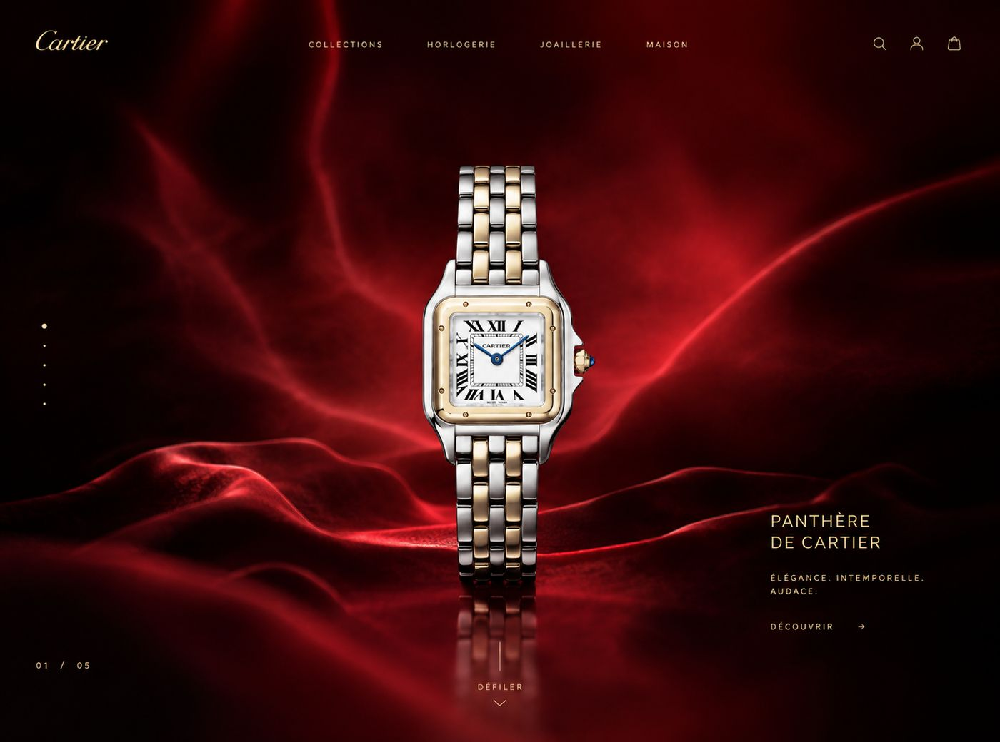

01
Cartier : interface digitale pour le lancement d’une collection horlogère
Pour accompagner le lancement d’une nouvelle collection de montres, nous avons imaginé une expérience digitale à la hauteur de l’univers de la maison. L’enjeu était de concevoir une interface capable de mettre en scène le produit tout en préservant l’équilibre entre sophistication, désirabilité et simplicité d’usage.
Découvrir l’expérience digitale Cartier →